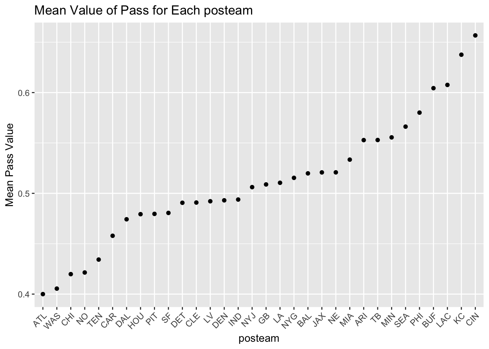
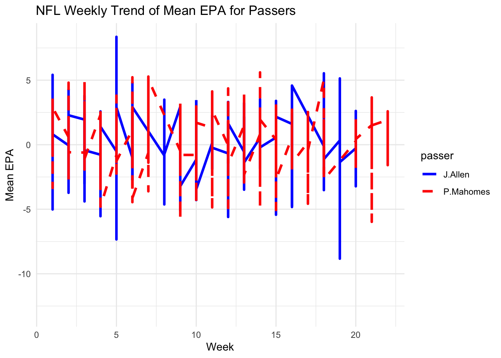

Attaching package: 'dplyr'The following objects are masked from 'package:stats':
filter, lagThe following objects are masked from 'package:base':
intersect, setdiff, setequal, unionHere is some analytics in relation to Data from the 2022 NFL season!

In data.frame, NFL2022_stuffs, remove observations for which values of posteam is missing.
Attaching package: 'dplyr'The following objects are masked from 'package:stats':
filter, lagThe following objects are masked from 'package:base':
intersect, setdiff, setequal, unionAnswer:
NFL2022_stuffs_cleaned <- NFL2022_stuffs %>%
filter(!is.na(posteam))
head(NFL2022_stuffs_cleaned) play_id game_id drive week posteam qtr down half_seconds_remaining
1 43 2022_01_BAL_NYJ 1 1 NYJ 1 NA 1800
2 68 2022_01_BAL_NYJ 1 1 NYJ 1 1 1796
3 89 2022_01_BAL_NYJ 1 1 NYJ 1 1 1769
4 115 2022_01_BAL_NYJ 1 1 NYJ 1 2 1765
5 136 2022_01_BAL_NYJ 1 1 NYJ 1 3 1741
6 172 2022_01_BAL_NYJ 1 1 NYJ 1 4 1733
pass wp
1 0 0.5462618
2 0 0.5469690
3 1 0.5725734
4 0 0.5545366
5 1 0.5401673
6 0 0.4880532-Summarize the mean value of pass for each posteam when all the following conditions hold:
wp is greater than 20% and less than 75%;
down is less than or equal to 2; and
half_seconds_remaining is greater than 120
Answer:
filtered_data <- NFL2022_stuffs %>%
filter(
!is.na(posteam),
wp > 0.2 & wp < 0.75,
down <= 2,
half_seconds_remaining > 120
)
summary_data <- filtered_data %>%
group_by(posteam) %>%
summarize(mean_pass = mean(pass, na.rm = TRUE))
print(summary_data)# A tibble: 32 × 2
posteam mean_pass
<chr> <dbl>
1 ARI 0.553
2 ATL 0.4
3 BAL 0.520
4 BUF 0.604
5 CAR 0.458
6 CHI 0.420
7 CIN 0.657
8 CLE 0.491
9 DAL 0.474
10 DEN 0.493
# ℹ 22 more rows-Provide both (1) a ggplot code with geom_point() using the resulting data.frame in Q2b and (2) a simple comments to describe the mean value of pass for each posteam. In the ggplot, reorder the posteam categories based on the mean value of pass in ascending or in descending order.
Answer:
library(ggplot2)
result <- NFL2022_stuffs %>%
filter(
wp > 0.2 & wp < 0.75,
down <= 2,
half_seconds_remaining > 120
) %>%
group_by(posteam) %>%
summarise(mean_pass = mean(pass, na.rm = TRUE))
result$posteam <- factor(result$posteam, levels = result$posteam[order(result$mean_pass)])
ggplot(result, aes(x = posteam, y = mean_pass)) +
geom_point() +
labs(title = "Mean Value of Pass for Each posteam",
x = "posteam",
y = "Mean Pass Value") +
theme(axis.text.x = element_text(angle = 45, hjust = 1))
All the variables in the data.frame, NFL2022_stuffs;
The variables, passer, receiver, and epa, from the data.frame, NFL2022_epa. by joining the two data.frames.
Answer:
NFL2022_epa <- read.csv('https://bcdanl.github.io/data/NFL2022_epa.csv')
NFL2022_stuffs_EPA <- left_join(NFL2022_stuffs, NFL2022_epa, by = c("play_id", "game_id", "drive", "posteam"))
NFL2022_stuffs_EPA <- NFL2022_stuffs_EPA %>%
filter(!is.na(passer))
head(NFL2022_stuffs_EPA) play_id game_id drive week posteam qtr down half_seconds_remaining
1 89 2022_01_BAL_NYJ 1 1 NYJ 1 1 1769
2 136 2022_01_BAL_NYJ 1 1 NYJ 1 3 1741
3 202 2022_01_BAL_NYJ 2 1 BAL 1 1 1722
4 230 2022_01_BAL_NYJ 2 1 BAL 1 2 1701
5 301 2022_01_BAL_NYJ 2 1 BAL 1 2 1579
6 412 2022_01_BAL_NYJ 3 1 NYJ 1 2 1451
pass wp receiver passer epa
1 1 0.5725734 Mi.Carter J.Flacco -0.49219242
2 1 0.5401673 <NA> J.Flacco -2.40220026
3 1 0.4958201 R.Bateman L.Jackson 0.07512748
4 1 0.4965942 D.Duvernay L.Jackson -0.10512029
5 1 0.5067707 D.Duvernay L.Jackson 0.41113183
6 1 0.5001284 Br.Hall J.Flacco -0.17972556Answer:
ggplot(NFL2022_stuffs_EPA, aes(x = week, y = epa, color = passer, linetype = passer)) +
geom_line(linewidth = 1.2) +
labs(title = "NFL Weekly Trend of Mean EPA for Passers",
x = "Week",
y = "Mean EPA") +
scale_color_manual(values = c("J.Allen" = "blue", "P.Mahomes" = "red")) +
scale_linetype_manual(values = c("J.Allen" = "solid", "P.Mahomes" = "dashed")) +
theme_minimal()
This line plot illustrates the weekly trend of the mean value of Expected Points Added (EPA) for two excellent passers.
Answer:
epa_difference <- NFL2022_stuffs_EPA %>%
group_by(week) %>%
summarise(mean_epa_difference = mean(epa[passer == "J.Allen"]) - mean(epa[passer == "P.Mahomes"]))
print(epa_difference)# A tibble: 22 × 2
week mean_epa_difference
<int> <dbl>
1 1 -0.169
2 2 0.339
3 3 -0.0763
4 4 -0.0803
5 5 0.325
6 6 0.173
7 7 NaN
8 8 NaN
9 9 -0.304
10 10 -0.429
# ℹ 12 more rowsSummarize the resulting data.frame in Q2d, with the following four variables:
Then find the top 10 NFL passers in 2022 in terms of the mean value of epa, conditioning that n_pass must be greater than or equal to the third quantile level of n_pass.
Answer:
passer_summary <- NFL2022_stuffs_EPA %>%
group_by(posteam, passer) %>%
summarise(
mean_epa = mean(epa, na.rm = TRUE),
n_pass = n()
)`summarise()` has grouped output by 'posteam'. You can override using the
`.groups` argument.quantile_threshold <- quantile(passer_summary$n_pass, 0.75)
top_passers <- passer_summary %>%
filter(n_pass >= quantile_threshold) %>%
arrange(desc(mean_epa)) %>%
slice_head(n = 10)
print(top_passers)# A tibble: 29 × 4
# Groups: posteam [29]
posteam passer mean_epa n_pass
<chr> <chr> <dbl> <int>
1 ARI K.Murray 0.0163 465
2 ATL M.Mariota 0.0251 370
3 BAL L.Jackson 0.0549 398
4 BUF J.Allen 0.172 785
5 CHI J.Fields -0.0455 469
6 CIN J.Burrow 0.153 854
7 CLE J.Brissett 0.0912 445
8 DAL D.Prescott 0.147 529
9 DEN R.Wilson -0.0163 609
10 DET J.Goff 0.171 661
# ℹ 19 more rows